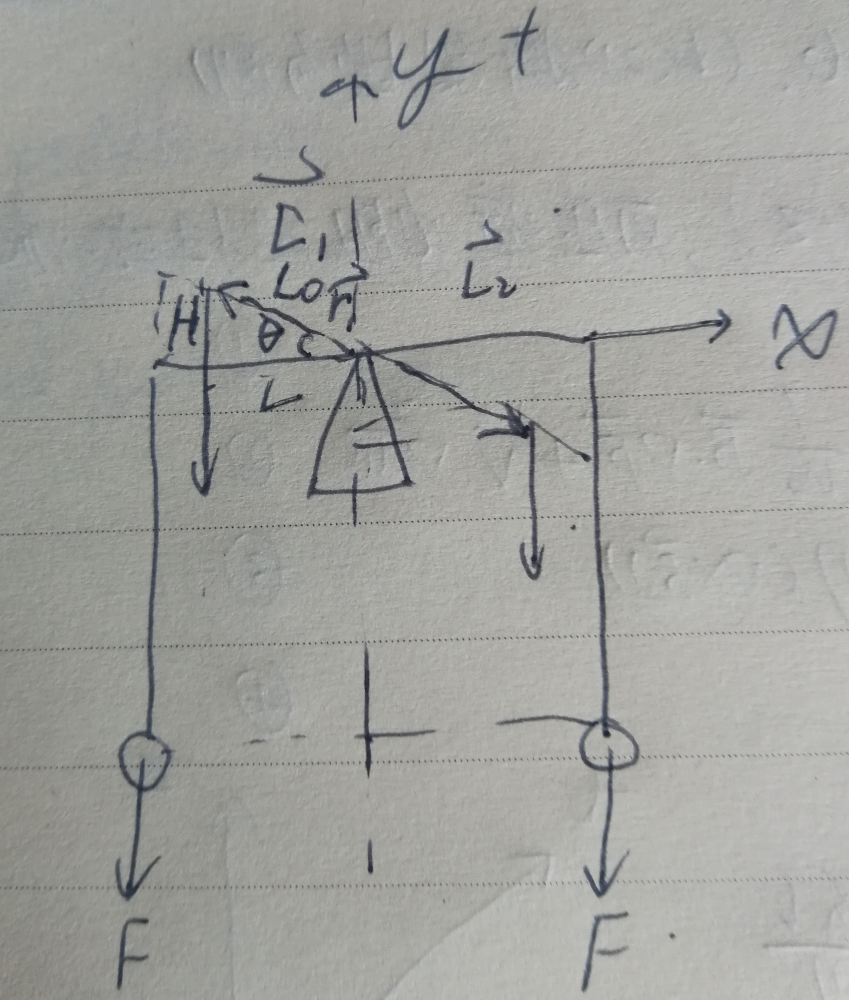
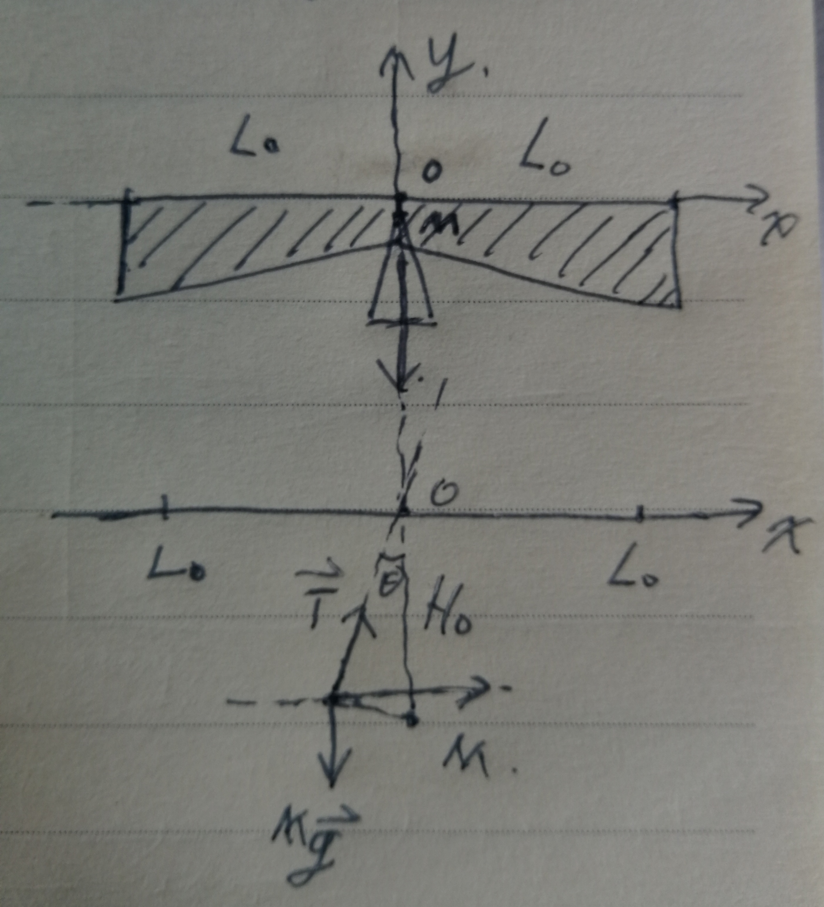
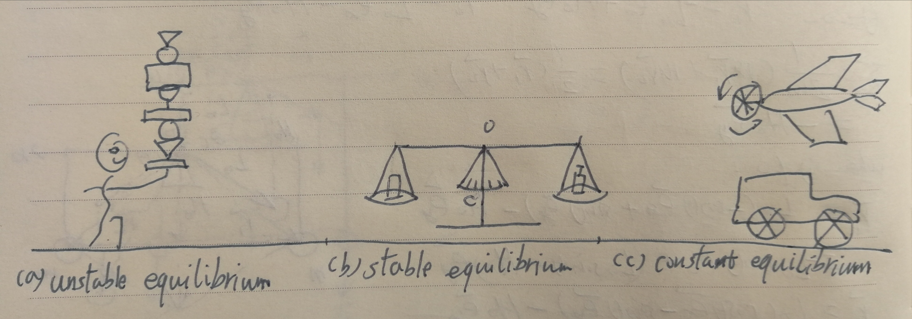

At first look, the balance of a scale might be a very simple problem. But if you look further, your will find that the balance of a scale is not just depend on the balance of the opposite torques.
 {width=200px}
{width=200px}
Balance of torques
Suppose we have a perfect scale whose two hands have 0 mass. And we name the two torques as and . The heavy objects carried by the two hands have the mass and . The hands of the scale have a angle relative to the horizontal line. The gravity constant be g. We study this system in 2D plane. Thus, the two torques shall be:
\vec{L_1} = \vec{r_1}\times(m\vec{g})\\ \vec{L_2} = \vec{r_2}\times(m\vec{g})\\Where , , . Thus the two torques equal to:
L_1 = (-L\vec{e_x} + H\vec{e_y})\times(-mg\vec{e_y}) = mgL\vec{e_z}\\ L_2 = (L\vec{e_y} - H\vec{e_y})\times(-mg\vec{e_y}) = -mgL\vec{e_z}Thus the balance equation shall be: . From this balance condition, the balance of a scale could be hold at any angle . For example, the perfect balance condition of a fun of an airplane or a wheel could hold static at any angle or rotate at constant velocity.
{width=200px}
Balance of a scale
The real balance of a scale is a bit complicated, it evolves the equilibrium of a complex system, where the most stable sate shall be the one with least potential energy. One important difference of a scale from the perfect condition is that the mass center of a scale is not overlapped with the balance axis.
Effective mass center of a scale
The effective mass center radius relative to a basis satisfy the equation [1]: . Which have the solution , where .
{width=200px}
Equilibrium of a scale
For the sensitivity of measurement, the balance of a scale is usually set at very marginal condition where the mass center M is very close to the balance point O. That usually gives us a fake impression that the balance of a scale is only the balance of torques, but this is actually not true. Suppose mass center location is and the related potential energy is: . If the scale rotates at an angle , the position of the mass center shall locate at . The related potential energy is: . Comparing the two potential energies we can see that: , which means the center of the scale ticks () has the least potential energy. This also means this equilibrium condition is most stable state. In the other hand, this equilibrium state could also be explained by the balance of forces. When there are shift from the center of the scale ticks (), the joined forces of the gravity and drag force will produce a balance force to drag the scale back to the center position.
Stability of equilibriums
Equilibrium conditions are the state under force or torque balance. However, the equilibrium may not be stable under small perturbations. Because a system tend to reach the minimum value of potential energy, where the system entropy has the maximum value.
{width=500px}
Unstable equilibrium
Where the system potential has maximum value under perturbation: . One typical example is the balance of objects by an acrobatic player.
Stable equilibrium
Where the system potential has minimum value under perturbation: . One typical example is the balance of a scale.
Constant equilibrium
Where the system potential has constant value under perturbation: . One typical example shall be the balance of a fun or wheel.